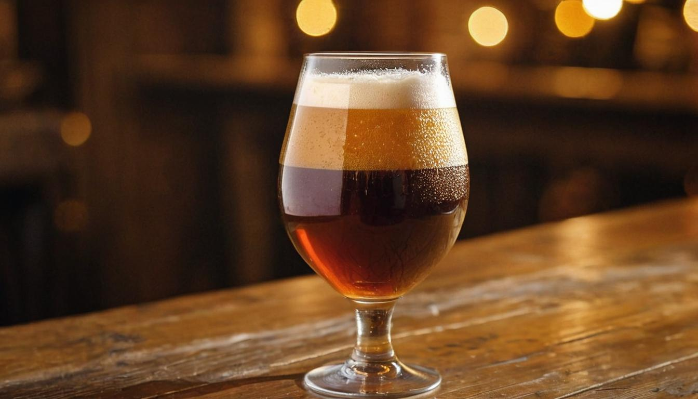
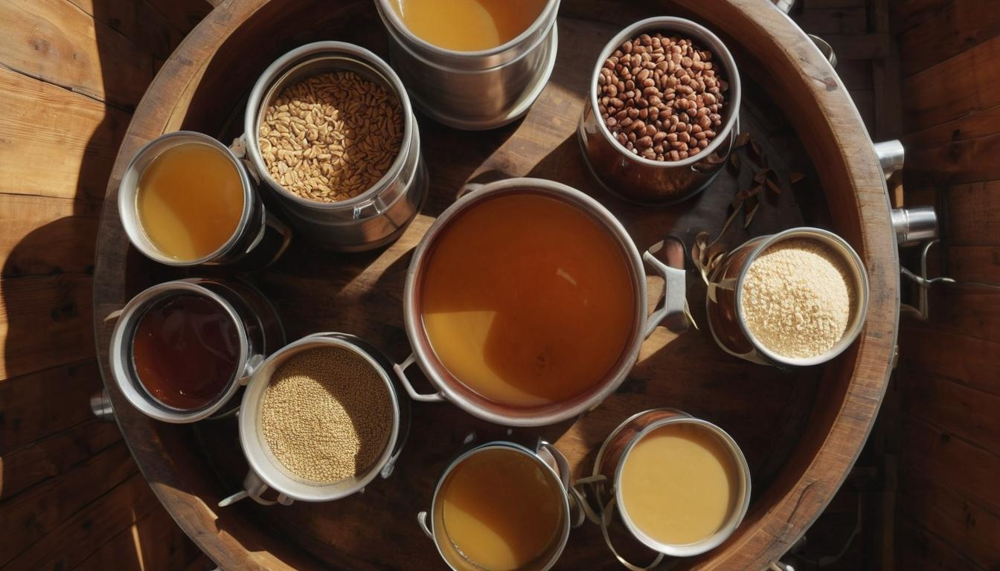
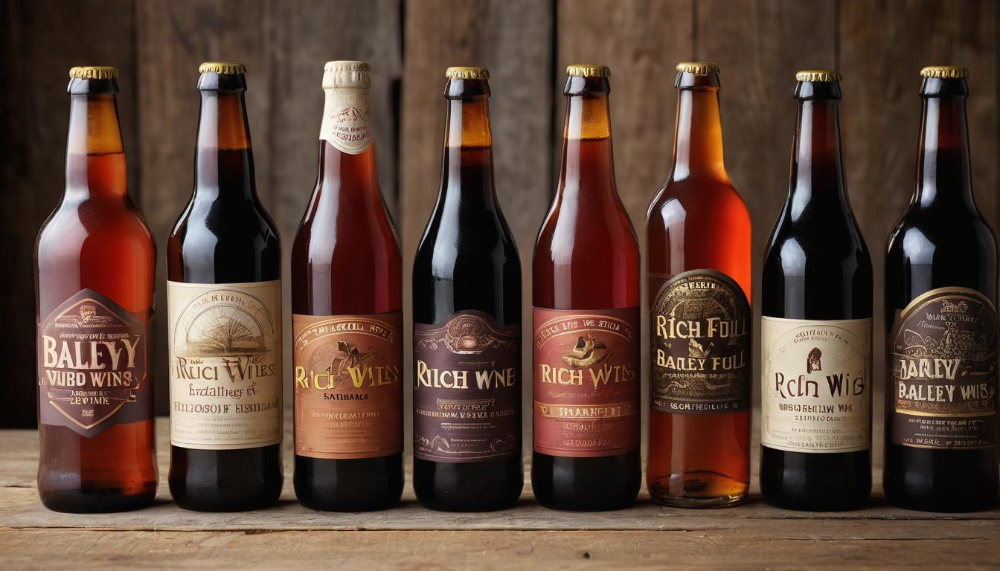

Barley Wine: America's Most Underrated beer Style
Barley wine stands out in the world of craft beer with its robust character and rich history. It’s not every day you encounter a brew that boasts nearly as much alcohol content as wine yet remains intricately tied to the tradition of grain brewing. This fascinating blend of strength and depth often leaves both new enthusiasts and seasoned brewers curious about its true nature.
The roots of barley wine trace back to 19th century England when it was first introduced commercially by Bass No.1 Ale in 1870. Since then, it's captivated taste buds across continents, morphing into variants like the hoppier American style. In exploring this guide, you'll find meticulous research and insights aimed at demystifying barley wine—from its distinct flavors to expert brewing techniques—ensuring you feel confident whether selecting a bottle or brewing your own exceptional craft.
Barley wine is a strong ale with a higher alcohol content, typically ranging from 6-12% by volume. Its brewing process involves specific gravities as high as 1.120, resembling the strength of wine but using grains instead of fruit. This results in a richer, more complex flavor profile and a potential for aging similar to that of wine.

What is Barley Wine?
Barley wine might sound like something in between beer and wine, but it's unmistakably a beer. This strong ale typically holds an alcohol content ranging from 6% to 12% by volume, making it much stronger than your average lager or pale ale.
When brewers make barley wine, they work with high specific gravities that potentially rival those in wine production. Specific gravity measures the density of a liquid compared to water, indicating the amount of sugar in the solution. The higher the specific gravity, the more sugar in the beer during fermentation, contributing to a higher alcohol content.
This scientific process makes barley wine hit you like a traditional wine even though it's made from grains rather than fruit like grapes. So when you're sipping on a glass of barley wine, you're not just enjoying any ordinary beer - you're experiencing something bold, complex, and full-bodied.
Moving on to its flavors, barley wine is known for its rich, dynamic taste profile. Picture warm malty sweetness infused with hints of toffee and dark fruits - a delightful interplay that's sure to tantalize your tastebuds.
American vs. English Styles
Now, let's talk about the styles. There are two primary ones: American and English. The American style tends to be hoppier and more bitter, giving it a bold and assertive character that sets it apart. On the other hand, the English variety tends to lean into a more balanced approach with less bitterness and greater variation in color.
By now, we've established that barley wine living up to its name isn't just about alcohol content; it's about a unique sensory experience that captures a wide range of complex flavors and aromas.
Uncovering the essence of barley wine's nature and flavor spectrum sets the stage for delving into its historical roots and how it became such a cherished part of the craft beer world.
Historical Origins and Style Variations
The roots of barley wine can be traced back to England in the 18th century, where it was crafted as a stronger, more robust version of traditional ales. In those days, brewers lacked the tools to measure alcohol content accurately, so they gauged it by the volume of raw materials used, mainly malt. The outcome was an ale with astonishing strength comparable to wine, paving the way for the spirited libation known today.
As brewing technology advanced, breweries outside England embarked on a journey to recreate this potent elixir. The 19th century saw the term "barley wine" coined – a fitting sequestration for these robust ales reminiscent of wine but derived from malt. However, true commercial popularity didn't emerge until Anchor Brewing Company unveiled its Old Foghorn Barleywine Style Ale in 1976, making an irresistible case for barley wine in the United States.
A momentous development was Sierra Nevada's Bigfoot Barleywine, introduced in 1983. This American barley wine boasts a captivating hoppiness, earning it a place of reverence among craft beer enthusiasts. On the other end of the spectrum lies the English barley wine—a homage to its rich and multifaceted heritage.
English Barley Wine
Revered for its balance of malt sweetness and an array of colors, spanning from lustrous amber to deep mahogany shades. Its hop presence remains understated compared to its American counterpart.
American Barley Wine
Contrastingly characterized by pronounced bitterness, amplified by a lighter hue when measured against its English sibling. Notable exemplars include Sierra Nevada's Bigfoot Barleywine, renowned for its substantial hop character.
This captivating interplay between tradition and innovation showcases how barley wine has branched into two unique styles that cater to distinct palates and preferences, enriching the tapestry of craft beer with their diverse characteristics and flavor profiles.
The intricate craftsmanship that defines barley wine extends beyond its rich history and styles—now let's shed light on the meticulous steps involved in brewing this formidable beverage.
Steps in Brewing Barley Wine

The first step in brewing barley wine is mashing. When it comes to mashing for barley wine, it's about creating a strong malt backbone that's characteristic of this style of beer.
Step I - Mashing
To achieve this, brewers start with a higher amount of malt compared to other beer styles. During the mashing process, the goal is to maintain a specific temperature range of 148°F to 155°F. This ensures optimal sugar extraction from the malt, which is crucial for achieving the full-bodied and malty sweetness that defines barley wine.
Step II - Boiling
Once the sugar extraction is complete, it's time for the boiling stage. For barley wine, longer boiling times are standard practice. This extended boil serves to concentrate the wort, which is the liquid extracted from the mashing process. As the wort condenses, caramel flavors develop, contributing to the rich and complex taste profile of barley wine. Additionally, hops are added at different intervals during the boil to balance out the inherent sweetness with bitterness, creating a harmonious flavor profile.
Step III - Fermentation
Following the boiling stage, it's essential to cool down the wort before transferring it to a fermenter. For barley wine, a high-tolerance yeast strain is added to kickstart the fermentation process. Due to its high specific gravity, fermentation for barley wine usually takes longer compared to other ales. This extended fermentation period allows for the development of the robust alcohol content and complex flavors that are characteristic of barley wine.
Step IV - Aging
Finally, once fermentation is complete, barley wines benefit immensely from extended aging periods. Many brewers choose to age their barley wines for several months to allow the flavors to meld and mature, resulting in a beer with remarkable depth and complexity. Some brewers even opt to age their barley wines in oak barrels, imparting additional layers of flavor and contributing to the beer's overall richness.
Each step in brewing barley wine plays a critical role in shaping its bold and distinctive character, from establishing its malty foundation during mashing to nurturing its complexity through extended aging periods.
Key Ingredients and Fermentation
Brewing barley wine is akin to conducting a symphony, where each individual ingredient plays a crucial part in composing the perfect harmony of flavors and strength. Let's start with the heart of the concoction—the malt.
Malt
Malt forms the sturdy foundation of barley wine. High-gravity malt varieties are utilized to amplify the beer's strength and body, contributing to its robust character and rich, complex flavor profile. The malt used in barley wine brewing tends to be roasted longer than those found in lighter beers, resulting in a deeper color and a more intense flavor, with complex caramel and toffee notes adding depth and richness to the brew.
Hops
In contrast to its sweet, malty profile, hops are employed not only to impart bitterness but also to provide balance to the heavy malt presence in barley wine. An array of hops can be used, including Centennial, Cascade, and East Kent Goldings, introducing a floral or citrusy aroma that complements the beer's robust malt backbone with a touch of complexity. When selecting hops for brewing barley wine, brewers often seek out varieties known for their dual-purpose: contributing bitterness while also infusing the brew with subtle layers of aroma and flavor.
Yeast
The yeast employed in brewing barley wine is perhaps one of the most critical components. High alcohol-tolerant yeast strains, such as WLP099 Super High Gravity or Wyeast 1098 British Ale, are essential for efficiently fermenting the high sugar concentration present in barley wine wort. The robust nature of these yeast strains allows them to thrive in higher alcohol environments, ensuring that the fermentation process progresses smoothly while maintaining the desired alcohol content characteristic of barley wine.
Fermentation Process
The fermentation process occurs at a controlled temperature range, usually around 65°F to 70°F, for an extended period. This extended fermentation time allows the yeast to convert a substantial portion of fermentable sugars into alcohol, resulting in a higher alcohol by volume (ABV) content. Additionally, this prolonged fermentation period encourages the development of intricate flavor compounds within the beer, contributing to its distinctive taste profile.
Understanding these key ingredients and the meticulous fermentation process is paramount when it comes to producing an exceptional barley wine. Each element contributes to shaping the beer's overall character, from its robust body and distinct flavors to its remarkable strength—a testament to the craftsmanship involved in creating this unique craft beer.
Now that we've explored the intricate artistry behind brewing barley wine, let's move on to unraveling the sensory experiences and serving techniques that elevate this esteemed beverage.
Tasting Notes and Serving Tips
Barley wine is an intricate beer that offers a plethora of flavors, creating a truly sensorial experience. When you take a sip, you'll notice a robust malt presence alongside hints of caramel, toffee, and dark fruits like figs and raisins. Each sip reveals another layer of complexity, drawing you in with its rich, almost wine-like qualities.
Expanding on the idea, when it comes to American-style barley wines, the flavor profile takes on an additional dimension. These versions tend to showcase more pronounced hop bitterness, adding an intriguing contrast to the sweet maltiness. You might even catch whiffs of piney or citrusy aromas dancing atop this already complex brew.
When it's time to savor your barley wine, keep in mind that serving temperature plays a crucial role in bringing out its multifaceted flavors. It's ideal to serve barley wine at a slightly warmer temperature than other beers, typically around 50°F to 55°F. This elevated temperature allows the beer's complex aromas to shine through, inviting you to fully appreciate the intricacy of its taste.
The choice of glassware also contributes significantly to the overall drinking experience. Opt for a tulip or snifter glass, as these shapes are designed to capture and concentrate the beer's enticing aromas, allowing you to bask in every nuance with each sip.
Imagine enjoying your chilled evenings with a velvety glass of barley wine complemented by the distinct flavor of bold cheeses or indulging in its robust character alongside roasted meats. Additionally, this full-bodied brew pairs exquisitely with rich desserts, creating a delightful harmony that elevates both your culinary delights and the beer itself.
It's truly remarkable how each element contributes to the overall enjoyment of barley wine—the intricate tasting notes reveal new layers with each sip, while careful consideration to serving temperature and glassware ensures that you relish every moment of this exceptional brew.
As we immerse ourselves in the world of barley wine, it's time to uncover some exceptional selections that stand out amidst this flavorful landscape.
Top Recommendations for Barley Wines

So you've developed a taste for barley wine and want to discover what to try next. Here are four top recommendations from revered brewers and enthusiasts that are guaranteed to tantalize your palate. Each of these selections presents a unique blend of flavors and distinct characteristics, promising a truly enriching exploration into the world of barley wine.
Thomas Hardy's Ale
If there were a Mount Rushmore for English barley wines, Thomas Hardy's Ale would undoubtedly secure its place. Celebrated for its remarkable age-worthiness and rich flavor profile, this classic brew often evolves over time, offering a journey through history with each bottle. With deep, nuanced flavors and a delightful warmth, this ale embodies the longstanding tradition of British brewing craftsmanship - an essential benchmark for any barley wine enthusiast.
Sierra Nevada Bigfoot
For an iconic American barley wine experience, Sierra Nevada's Bigfoot stands as the quintessential choice. Boasting a robust hop character complemented by a hearty malty backbone, this beloved brew has been a cornerstone of the craft beer movement since 1983. Whether savored fresh or aged to witness its evolution, this beer has earned a well-deserved reputation for its complex flavors and exceptional quality.
Anchor Old Foghorn
An emblem of American barley wines, Anchor Brewing's Old Foghorn epitomizes balanced flavor and historical significance. Brewed with meticulous attention to detail and time-honored techniques, this ale delivers a harmonious blend of malt sweetness, gentle bitterness, and subtle fruit notes. Its enduring legacy mirrors the grand history of American craft brewing, rendering it an essential addition to any exploration of barley wine.
Founders Nemesis
To wrap up our list, we present Founders Nemesis, a coveted seasonal release that perpetually captivates the imagination of enthusiasts. This brew is renowned for blending unique ingredients in each release, paving the way for an eagerly anticipated experience by craft beer aficionados every year. Its diverse flavor profiles ensure that no two batches are ever quite the same, making it an imperative option for those eager to revel in the distinctive creativity and artistry defining the craft beer world.
These recommendations encompass traditional excellence, iconic status, historical significance, and inventive ingenuity - representing the wonderful diversity within the realm of barley wines catering to both seasoned connoisseurs and newcomers alike. In their diverse flavors and rich histories, these barley wines open up a world of exploration for enthusiasts. Embarking on this journey promises a discovery of new tastes and appreciation for the craftsmanship behind these celebrated brews. Cheers to expanding your palate with these exceptional recommendations!